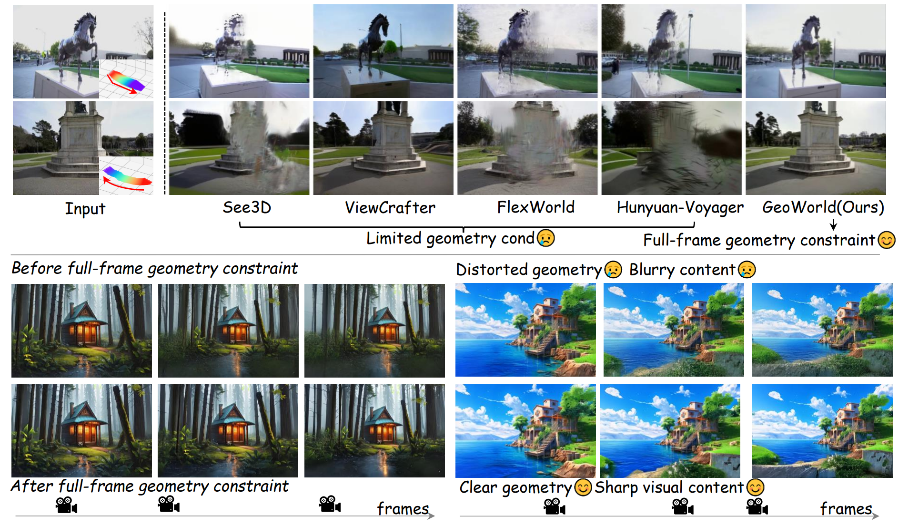
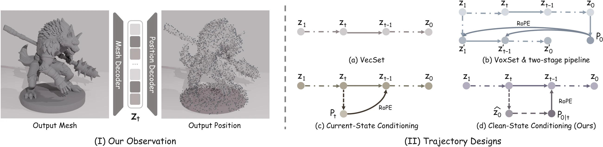
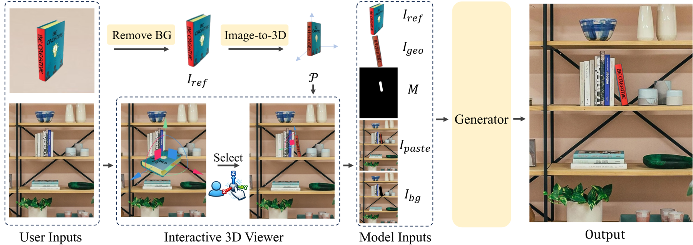
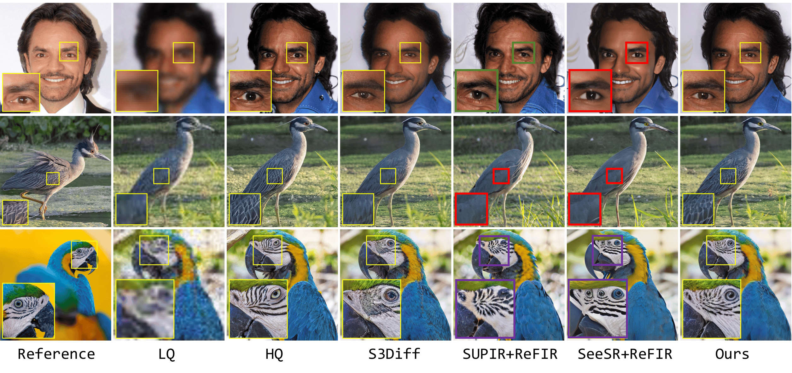

ECCV 2026
GeoWorld: Providing Full-frame Geometry Features to Facilitate 3D Scene Generation
Full-frame geometry features for high-fidelity image-to-3D scene generation.
I am a first-year Ph.D. student at Nankai University, working on world models and 3D generation. Previously, I received my bachelor's degree in Mathematics and Applied Mathematics from East China University of Science and Technology.
My research explores how generative models can build geometrically consistent visual worlds. I am particularly interested in interactive world models, 3D scene generation, and controllable video generation.
I am currently a research intern at ByteDance, working on controllable video generation and interactive world models.

Full-frame geometry features for high-fidelity image-to-3D scene generation.

Spatial self-conditioning for single-stage 3D generation.

Controllable object insertion with explicit 3D geometric guidance.
Pose-aligned 3D generation with explicit geometric conditioning in observation space.

Adaptive reference guidance for reliable single-step diffusion super-resolution.
Taming diffusion priors for high fidelity real-world image super-resolution.
Intern
Controllable video generation, streaming video editing, and interactive world models.
Intern
Diffusion-based image super-resolution.